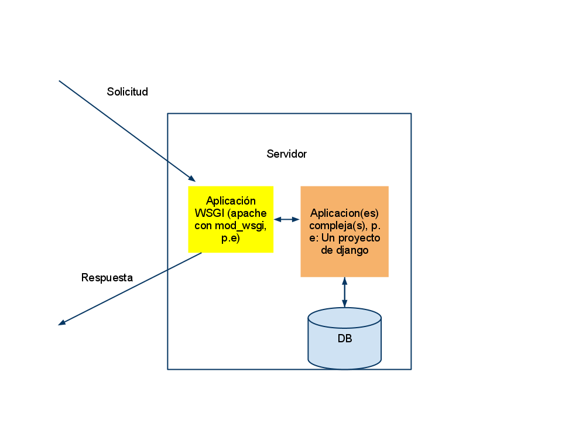

| space, → | next slide |
| ← | previous slide |
| d | debug mode |
| ## <ret> | go to slide # |
| c | table of contents (vi) |
| f | toggle footer |
| r | reload slides |
| z | toggle help (this) |
>= L. 5000 primer año)GET / HTTP/1.1
Host: google.com
Accept-Language: es
Connection: Keep-Alive
User-Agent: Mozilla/4.0
Apache, nginx, etc.)HTTP/1.1 200 OK
Date: Sat, 09 Apr 2011 04:55:40 GMT
Cache-Control: private, max-age=0
Content-Type: text/html; charset=ISO-8859-1
Server: gws
<html>
...
CREATE, READ, UPDATE, DESTROYPOST, GET, PUT, DELETE/home/lfborjas/conquistar_el_mundo.txthttp://unblogx.com/posts/zalgo
def application(environ, start_response):
text = 'Hola Mundo!'
start_response(
"200 OK",
[('Content-Type', 'text/plain'),
('Content-Length', str(len(text)))]
)
return [text]
from paste.httpserver import serve
serve(application)from webob import Request, Response
def sum_nums(text):
return sum([int(e) for e in text if e.isdigit()])
def app(environ, start_response):
request = Request(environ)
text = ''.join(request.GET.keys())
response = Response(content_type='text/html',
body="""<html>
<body style='font-size: 250px;'>
%s
<body>
</html>"""%sum_nums(text))
return response(environ, start_response)
from paste.httpserver import serve
serve(app)url(r'^$', 'lista.views.crear',
name='home'),
url(r'^(?P<codigo>[a-zA-Z0-9]+)/$', 'lista.views.mostrar',
name='lista'),
url(r'^tarea/', include('tarea.urls')),def mostrar(request, codigo):
lista = Lista.objects.get(codigo=codigo)
#Guardamos para actualizar la fecha de acceso
lista.save()
return render_to_response('lista/mostar.html',
{'lista':lista},
context_instance=
RequestContext(request))class Lista(models.Model):
codigo = models.TextField(max_length=10)
titulo = models.TextField(null=True,
blank=True,
default='')
fecha_creacion = models.DateTimeField(auto_now_add=True)
fecha_acceso = models.DateTimeField(auto_now=True){% if lista.tarea_set.exists %}
<ul id="lista_tareas">
{% for tarea in lista.tarea_set.all %}
<li>
<input type="checkbox" name="hecha"
value="{{ tarea.id }}" class="hecha-check"
{% if tarea.hecha %}checked{% endif %}>
<span class=
"{% if tarea.hecha %}tachado{% endif %}">
{{ tarea.descripcion }}
</span>
</li>
{% endfor %}
</ul>
{% endif %}Switch branches para ver el de la presentación)